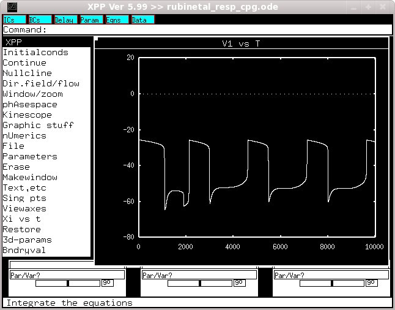

This is the readme for the model associated with the paper: Rubin JE, Shevtsova NA, Ermentrout GB, Smith JC, Rybak IA (2009) Multiple rhythmic states in a model of the respiratory central pattern generator. J Neurophysiol 101:2146-65 This models runs under XPP available from http://www.math.pitt.edu/~bard/xpp/xpp.html After downloading and extracting the archive the program can be started for example under linux by cd'ing to the new folder and typing xppaut rubinetal_resp_cpg.ode Click on Initialconds -> Go When complete click on Window/zoom -> (W)indow and then change "X Hi" to 10000 and click OK. Then you should see a graph like:  which is similar to the first trace in Figure 2A from the paper.